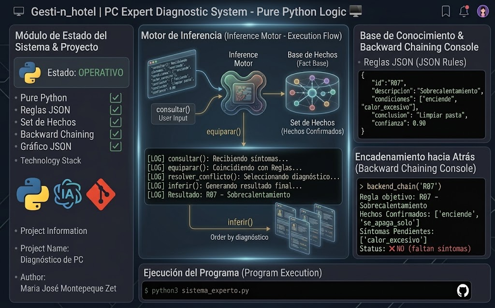

PythonIA
Sistema Experto — Diagnóstico de PC
Sistema experto en Python puro, sin librerías externas. Diagnóstico múltiple, encadenamiento hacia atrás (backward chaining) y exportación de la base de conocimiento a grafo JSON.